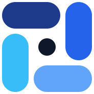

Ubah format file
Gambar dan audio diproses di browser, jadi file tidak keluar dari perangkatmu. Dokumen diproses di server dan dihapus paling lama 1 jam setelah selesai. Tanpa akun.
Pilih konversi
Gambar
- Konversi gambarJPG, PNG, WEBP, HEIC ke JPG, PNG, atau WEBPDi browser
- HEIC ke JPGFoto iPhone jadi JPGDi browser
- JPG ke PNGUbah JPG jadi PNGDi browser
- PNG ke JPGUbah PNG jadi JPGDi browser
- WEBP ke JPGUbah WEBP jadi JPGDi browser
- JPG ke WEBPUbah JPG jadi WEBPDi browser
- Ubah ukuran gambarResize dengan rasio terkunciDi browser
Audio
Kompres
- Kompres gambarKecilkan JPG, PNG, WEBPDi browser
- Kompres PDFKecilkan PDF, 3 levelSegera
- Kompres WordKecilkan DOCX, 3 levelSegera
- Kompres PowerPointKecilkan PPTX, 3 levelSegera
Dokumen
- PDF ke WordPDF jadi DOCX yang bisa dieditSegera
- Word ke PDFDOCX jadi PDFSegera
- PPTX ke PDFSlide PowerPoint jadi PDFSegera
- Excel ke PDFXLSX jadi PDFSegera
- PDF ke TXTAmbil teks dari PDFSegera
- Word ke TXTAmbil teks dari DOCXSegera
Tidak ada tool yang cocok. Coba kata lain, misalnya nama format.
Tiga langkah
Upload
Tarik file ke kotak, atau klik untuk memilih. Sampai 10 file sekaligus.
Pilih format
Tool menawarkan format tujuan yang cocok dengan file kamu. Atur kualitas kalau perlu.
Download
Unduh satu file, atau semua hasil sebagai ZIP.
Apa yang pergi ke mana
Di browser kamu
Konversi dan kompres gambar, ubah ukuran gambar, dan konversi audio. File tidak keluar dari perangkat. Kamu bisa putus internet setelah halaman terbuka, kecuali pemuat audio belum pernah diunduh.
Lewat server
Konversi dokumen (PDF, Word, PowerPoint, Excel) dan kompres PDF, Word, PowerPoint. File diunggah, diproses di wadah terisolasi tanpa akses internet, namanya diacak, dan tidak dibaca manusia.
Kapan dihapus
File di server dihapus otomatis paling lama 1 jam setelah selesai. Isi file tidak dicatat di log.
Batas awal
| Jenis | Ukuran maksimal | Catatan |
|---|---|---|
| Dokumen | 25 MB | Tidak ada OCR. PDF hasil scan belum didukung. |
| Gambar | 20 MB | Sampai 10 file per proses. |
| Audio | 50 MB / 10 menit | Mana yang lebih dulu tercapai. |
Pertanyaan yang sering muncul
Apakah file saya diunggah?
Tergantung tool. Gambar dan audio diproses di browser, jadi tidak diunggah. Konversi dokumen dan kompres PDF, Word, PowerPoint berjalan di server, dan file dihapus otomatis paling lama 1 jam setelah selesai.
Kenapa hasil PDF ke Word layoutnya berubah?
PDF menyimpan posisi tiap huruf, bukan struktur paragraf. Mengubahnya ke Word berarti menebak struktur itu, dan tebakan tidak selalu tepat. Tabel rumit dan kolom ganda paling sering bergeser.
Bisa untuk PDF hasil scan?
Belum. PDF hasil scan berisi gambar, jadi butuh OCR untuk jadi teks. OCR belum ada di versi ini.
Kenapa konversi audio mengunduh file besar dulu?
Mesin konversi audio (sekitar 30 MB) dimuat sekali supaya audio bisa diproses di browser. Setelah itu disimpan oleh browser.
Kenapa kompres PNG hematnya kecil?
PNG menyimpan gambar tanpa kehilangan data. Untuk hemat lebih besar, ubah ke WEBP atau JPG, atau kecilkan resolusinya.
Apakah ada batas jumlah konversi?
Tool di browser tidak dibatasi. Tool server dibatasi sekitar 20 proses per jam per alamat IP untuk mencegah penyalahgunaan.